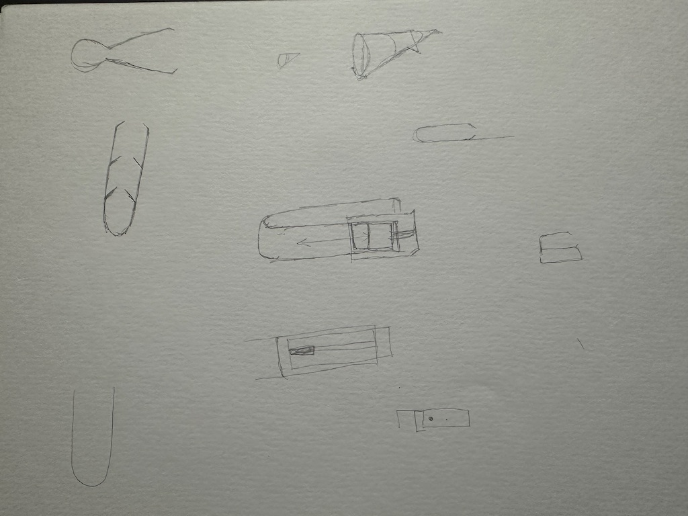
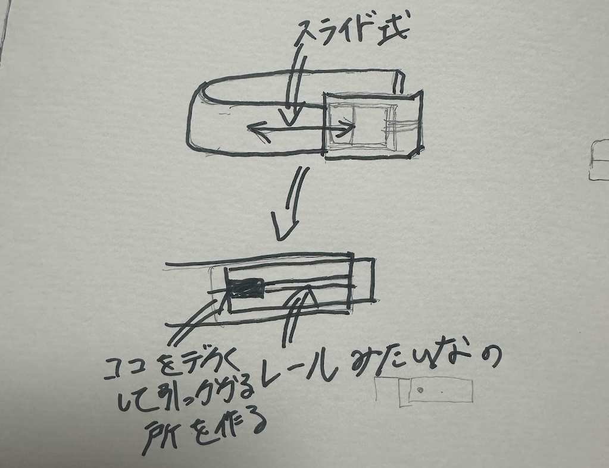
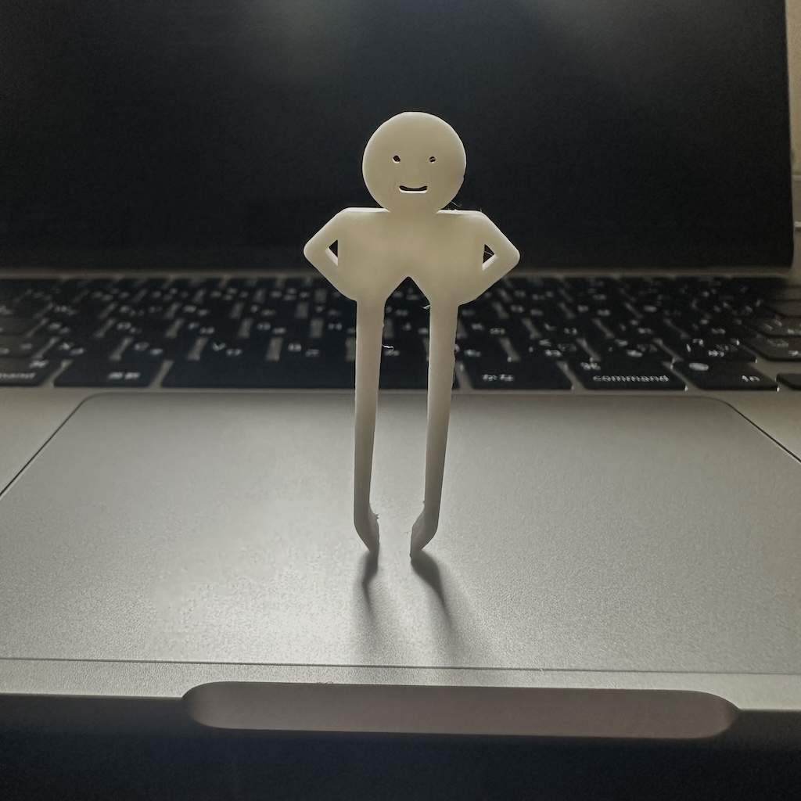
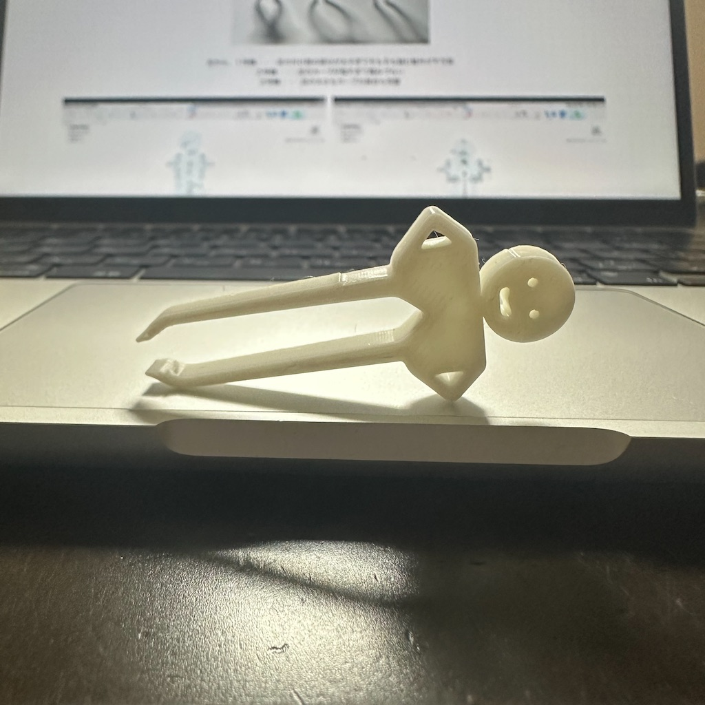
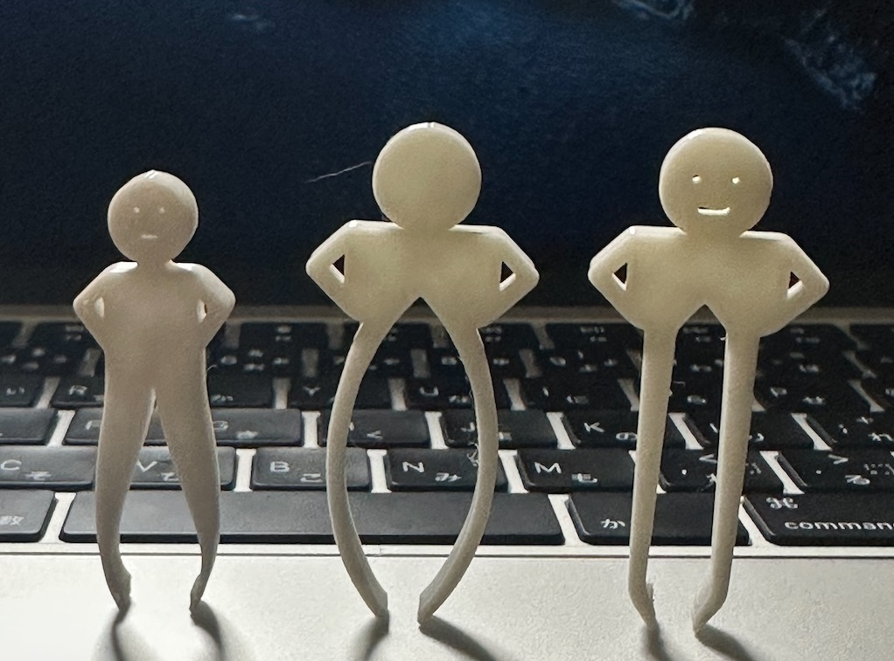
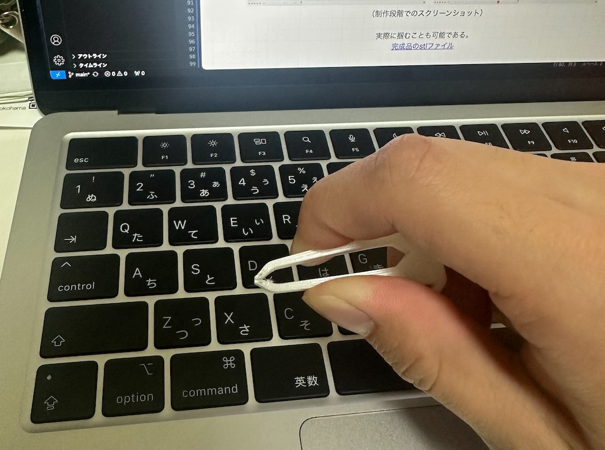

3DPrinting
はじめの一歩
デジタルファブリケーションの講義で、ピンセットを進化させる課題が提示させられた。 私が思いついたアイディアは、「長さ調整が可能なピンセット」や「指にはめるタイプ」など 機能性を重視したものが多かった。


しかし、いざCADと向き合うと初心者の私には制作が難しすぎた。 そこで閃いたのが「デザインが変なものを作る」ということであった。 言い換えるならば、機能性を捨てるということだ。そして生まれたのが、人間の形をしているピンセットである。
完成


作品名は「ピンセットだって美脚になりたい」
実はこれは3号機で失敗を繰り返してやっと出来上がったものである。
進化の過程

左から、１号機は足の付け根の部分が太すぎて掴む動作が不可能
２号機は足のカーブが強すぎて掴みづらい
３号機は足の太さもカーブ具合も完璧


実際の使用感
実際に掴むことも当然可能である。掴み心地は意外といい感じだが、腕の部分が若干邪魔になる。

実際に使ってみたい方は以下のリンクよりどうぞ
完成品のstlファイル